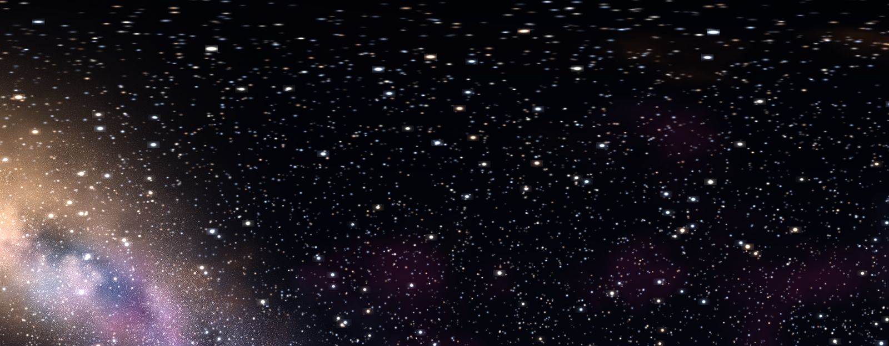

Tidal tunes Java, lightens your graphics settings and installs Sodium, Lithium, FerriteCore and ModernFix for you. Low to High are free. Max comes with Tidal+.
CPS counter, keystrokes, ping, armor status, potion effects, punch speed, free look, zoom, no hurt cam and more. The PvP ones are lit up here. New modules are on the way. Right Shift opens the menu.
Replace the vanilla sky with space, a sunset, or a day to night cycle.

Browse Modrinth inside the launcher. Dependencies install themselves and every file is scanned first.
Add friends by Minecraft name and chat from the launcher or in game. Put your own image on a cape.
want to run bedwars?
yeah, give me 2 mins to boost my fps lol
you and your 188 fps
invite me